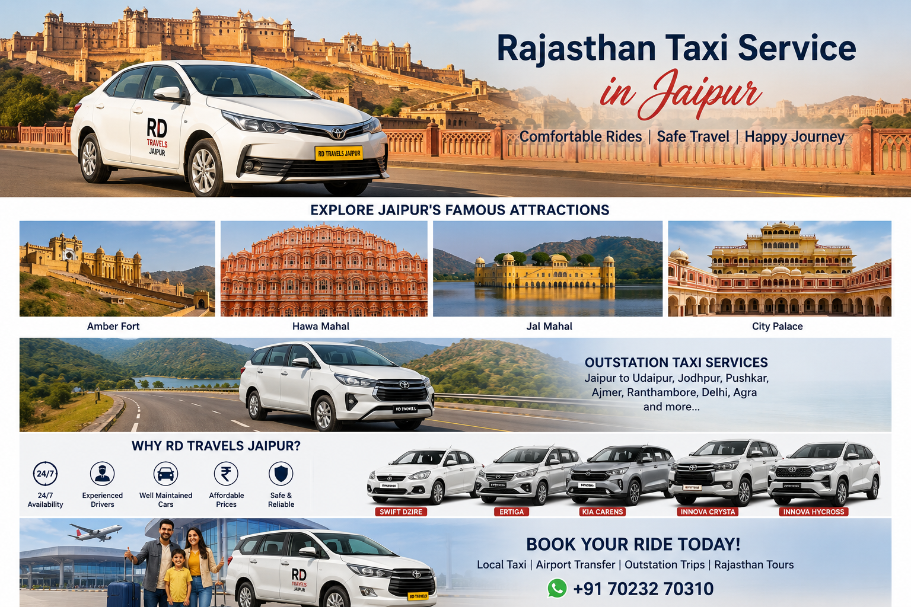

Best Taxi Service in Jaipur for Local & Outstation Travel

Planning a trip from Jaipur and looking for a reliable taxi service? RD Travels Jaipur provides comfortable and convenient taxi services for local travel, airport transfers, outstation trips and Rajasthan tours.
Whether you need a taxi for Jaipur sightseeing, an airport pickup, an outstation journey or a Rajasthan tour, choosing a dependable taxi service can make your journey comfortable and stress-free.
RD Travels Jaipur offers comfortable cars, professional service and convenient booking for local and outstation travel.
Why Choose RD Travels Jaipur?
Traveling around Jaipur or Rajasthan becomes easier when you have a trusted taxi service. RD Travels Jaipur focuses on providing clean, comfortable vehicles and convenient travel options for individuals, families and groups.
Jaipur Local Taxi Service
If you want to explore Jaipur, a local taxi can be a convenient option. You can visit popular attractions such as Amber Fort, City Palace, Hawa Mahal, Jal Mahal and other famous places around the city.
A private taxi allows you to travel according to your own schedule without depending on public transportation.
Jaipur Airport Taxi Service
Need a taxi to or from Jaipur International Airport? RD Travels Jaipur provides airport transfer services for passengers travelling to and from Jaipur Airport.
Airport taxi service is especially useful for families, business travellers and tourists who want a comfortable transfer to their hotel or destination.
Outstation Taxi from Jaipur
Planning an outstation trip from Jaipur? You can book a comfortable taxi for destinations across Rajasthan and nearby states.
Outstation taxi services are suitable for family trips, weekend getaways, business travel and long-distance journeys.
Rajasthan Tour by Taxi
Rajasthan is famous for its forts, palaces, colourful markets, historical cities and beautiful landscapes. Travelling by private taxi can make it easier to explore multiple destinations during your trip.
Popular Rajasthan destinations include Jaipur, Ajmer, Pushkar, Jodhpur, Udaipur, Jaisalmer and many other places.
Cars Available with RD Travels Jaipur
Depending on your travel requirements and group size, different vehicle options can be considered, including:
- Maruti Swift Dzire
- Maruti Ertiga
- Kia Carens
- Toyota Innova Crysta
- Toyota Innova Hycross
Book Your Taxi in Jaipur
If you are planning local travel, airport transfer, an outstation journey or a Rajasthan tour, RD Travels Jaipur can be your convenient taxi travel option.
Need a Taxi in Jaipur?
Contact RD Travels Jaipur for taxi booking and travel information.
📞 Call Now 💬 WhatsApp